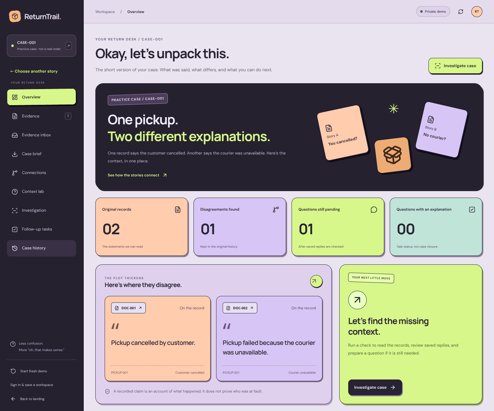

01 / RETURNTRAILTEAM CODE101

One pickup.
Two different stories.
ReturnTrail connects return-pickup claims to their original sources. Review conflicting evidence, inspect graph paths and track what an earlier explanation actually covered.
My contribution Full-stack development across the interface, backend workflows and deployment, alongside Ajeet.
Inside the build
The engineering decision
A resolved task should not silently resolve new evidence. Follow-ups retain their reviewed source set, while new sources can require fresh review.
A bug worth remembering
The agent could answer before completing its required tools. Backend tool-order enforcement and regression checks made the investigation sequence explicit.
Fictional practice cases. Recorded claims and manual replies do not independently establish fault.